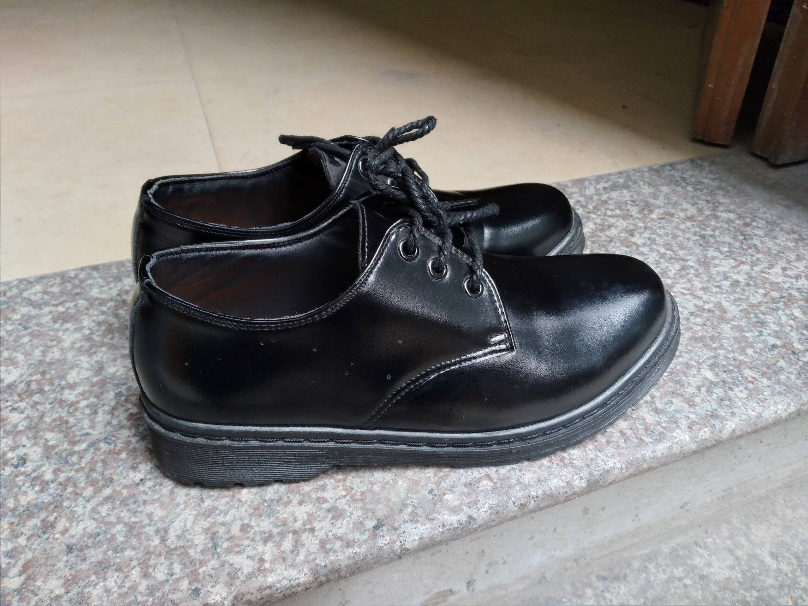

Ming Phạm
Hãy thay thế sneakers của bạn bằng đôi giày này!
Từ lâu tôi đã là một fan trung thành của các dòng sneakers, đặc biệt là Nike vì độ trẻ trung, năng động cũng như rất thuận tiện của chúng. Tuy nhiên qua thời gian (có lẽ là do tuổi tác), suy nghĩ của tôi đã ít nhiều thay đổi, và tôi cũng dần mất đi hứng thú với sneakers, thay vào đó những đôi giày da lại trở nên cuốn hút hơn. Và nếu bạn cũng như tôi, cũng cảm thấy mất đi hứng thú với sneakers hay chỉ đơn giản là muốn thử sức với một phong cách mới, thì tôi tin chắc đây là bài viết dành cho bạn.
Đôi giày mà tôi muốn giới thiệu với mọi người chính là đôi Derby Shoes, một họ của dòng Dress Shoes. Đây là đôi giày mà bất cứ ai nhìn qua cũng sẽ cảm thấy sự lịch thiệp, trang trọng nhưng vẫn có một chút hầm hố của tuổi trẻ, thực sự quá phù hợp cho những người dưới 30 tuổi như tôi và các bạn đây. Đôi giày này phù hợp cho cả nam và nữ, vì vậy bất cứ ai cũng có thể mang chúng một cách rất đẹp mắt.
Vậy Derby Shoes có những ưu điểm gì? Hãy cùng tôi điểm qua ngay sau đây nhé.
Đầu tiên, chắc chắn những đôi Derby Shoes sẽ mang lại một sự chỉn chu, đứng đắn cho trang phục của bạn. Đó là một đặc điểm chung của tất cả các dòng giày da, bởi chất liệu da luôn đem lại một cảm giác rất sang trọng. Tuy nhiên, sự “chỉn chu” của những đôi Derby Shoes lại không quá “formal” như những dòng giày da chuyên để mặc suit, mà thay vào đó vẫn có gì đó trẻ trung, đường phố. Chính vì vậy, bạn hoàn toàn có thể linh hoạt giữa việc dress-up với quần âu và áo sơ mi, hay cũng có thể dress-down cùng jeans và T-shirt. Tiếng Anh có câu “Best of both worlds”, hay tốt ở cả hai thế giới, dùng để chỉ những thứ có tác dụng ở cả hai mặt đối lập trong cuộc sống, và với tôi đôi giày này chính là “ Best of both worlds” do nó thể hiện tốt ở cả sự “formal” cũng như “informal”. Đó là một đặc điểm mà những đôi sneakers không thể có bởi vì sneakers sẽ chỉ thể hiện một bộ trang phục rất “casual” mà thôi.
Mặt khác, những đôi giày da nói chung, cụ thể ở đây là Derby Shoes, rất thuận tiện khi vệ sinh. Chất liệu da thực sự không phải là chất liệu dễ bám bụi, vì vậy bạn hoàn toàn chỉ cần dung một chiếc khan ướt lau qua là bụi bẩn sẽ hoàn toàn tan biến. Ngược lại, những đôi sneakers, do chất liệu vải đặc trưng của chúng, lại rất bám bụi và kết quả là việc vệ sinh sẽ khó hơn rất nhiều, đôi khi sẽ cần sử dụng cả xà phòng và cọ rất lâu để sạch các vết bẩn.
Một ưu điểm nữa mà tôi muốn nhắc đến đó là những đôi Derby sẽ không gây ra cảm giác hôi chân cho người sử dụng. Nếu một đôi giày da được sản xuất thực sự tỉ mỉ và chăm chút từ giai đoạn cho nguyên liệu, thì các miếng da xịn sẽ có mùi rất nồng và đặc trưng, do đó dù bạn có bị hôi chân thì giày cũng sẽ không bị hôi do mùi của chính đôi giày đã át đi chúng (tất nhiên là tôi không bị hôi chân).
Cuối cùng, việc lựa chọn đi dòng giày nào là tùy theo sở thích của từng cá nhân. Nhưng nếu bạn cũng như tôi, đã chán những đôi sneakers hay muốn đổi phong cách thì tôi thực sự khuyên bạn hãy thử sức với Derby Shoes, chắc chắn bạn sẽ bất ngờ về sự trưởng thành trong trang phục cũng như sự thuận tiện mà chúng mang lại.